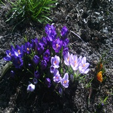
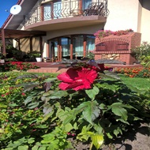
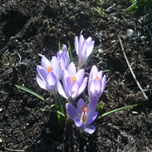

Jestem absolwentem Politechniki Szczecińskiej Instytutu Okrętowego, obecna Oceanotechnika. Aktualnie kontynuuję naukę w ZUT, na wydziale informatyki, w zakresie programamowania w języku Python i tworzenia serwisów www.
- Zainteresowania
- Taniec towarzyski
- IT
- Sport
- Muzyka
- Praca
- Utrzymanie ruchu sieci ciepłowniczej
- Koordynacja pracy źródeł ciepła w Szczecinie
- Reagowanie w sytuacjach awaryjnych
- Ulubione
- Relaks na świeżym powietrzu
- Praca w ogrodzie
- Kontakt
- Adres: ul. Akacjowa 3, 70-896 Załom
- Telefon: 698 192 462
Trochę różnych zdjęć


